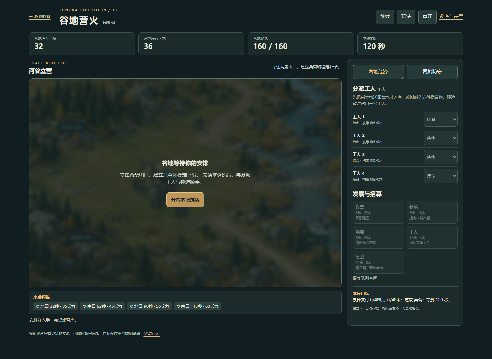
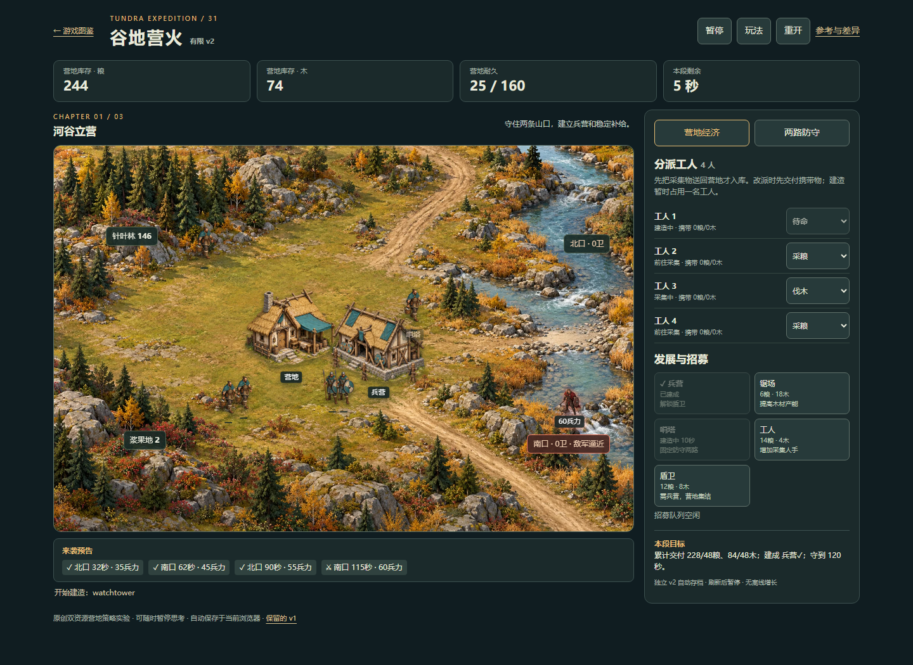
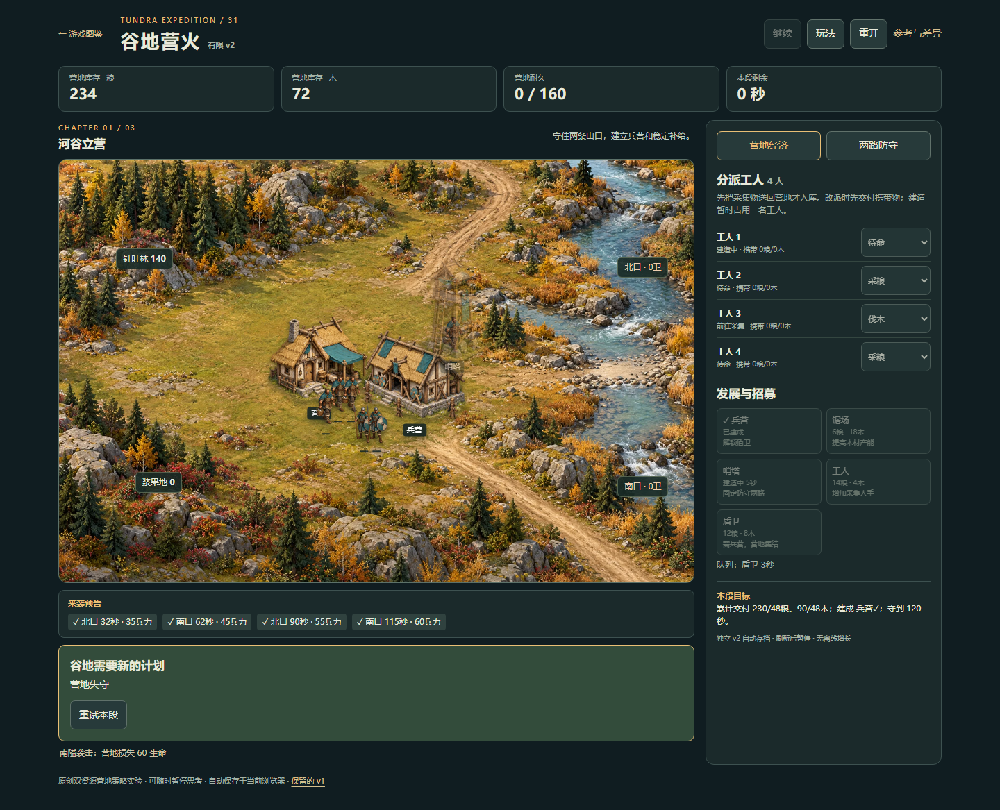
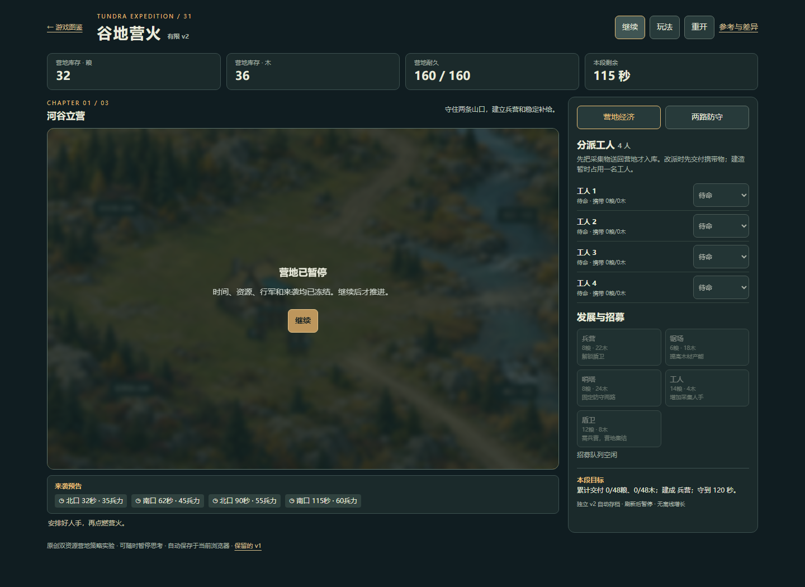

苔原远征 · 失守与重试
普通UI经营并有意不设前线防守，120秒原规则自然失守；终点保留5秒建设/3秒招募。刷新失败终态、直接重试、取消/确认重开及旧队列不复活均通过。未改游戏或注入状态。
方法与边界 · 实际UI与只读审计 · 分开的离线参考 · 打开游戏
confirmed-restart-clean-ready.png
direct-retry-ready-full-reset.pnglate-construction-running.png
loss-refresh-kept.pngnatural-camp-loss-pending-work.png
new-action-no-old-queue.png